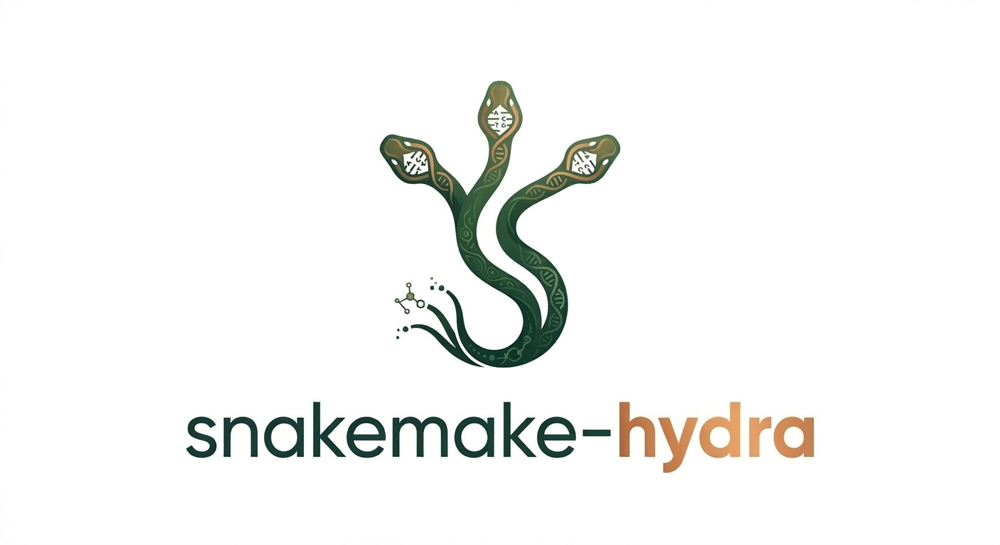
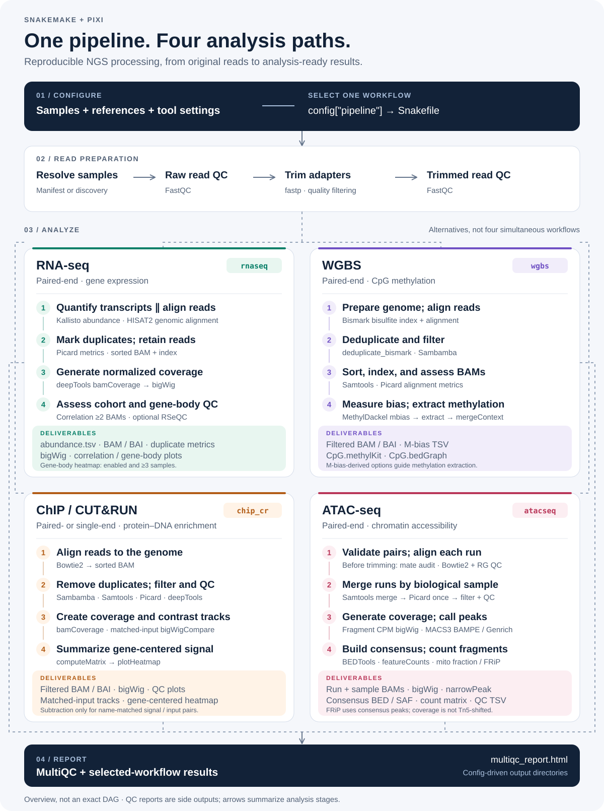

Expression workflow
FastQC, fastp, Kallisto, HISAT2, duplicate metrics, BigWig output, optional gene body coverage, and MultiQC.

The project dispatches RNA-seq, WGBS, ChIP-seq/CUT&RUN, or ATAC-seq from a single `config/config.yaml` switch, then builds a selected workflow from reusable rule modules.
This repository is a workflow application. Snakemake owns dependency resolution, Pixi owns the tool environment, and the workflow modules own pipeline behavior.
FastQC, fastp, Kallisto, HISAT2, duplicate metrics, BigWig output, optional gene body coverage, and MultiQC.
FastQC, fastp, Bismark, deduplication, BAM filtering, MethylDackel M-bias/extraction, and MultiQC.
Bowtie2 alignment, BAM QC, filtering, deepTools plots, heatmaps, BigWigs, input subtraction, and MultiQC.
Bowtie2, duplicate metrics, filtered BAMs, fragment QC, BigWigs, MACS3 or Genrich peak calling, and MultiQC.
The top-level `Snakefile` only dispatches. Each selected workflow prepares config and samples, then imports the shared and pipeline-specific rule files it needs.

Snakemake builds a DAG from declared inputs and outputs. The selected module decides what the final `rule all` requires.
# config/config.yaml
pipeline: "wgbs"
# Snakefile imports rules as:
wgbs_fastqc_raw_pe
wgbs_bismark_alignment
wgbs_multiqcinclude: "rules/qc.smk"
include: "rules/trimming_and_qc.smk"
include: "rules/wgbs/alignment.smk"
include: "rules/wgbs/methyldackel.smk"
include: "rules/multiqc.smk"The routes share early QC and trimming patterns, then diverge into assay-specific alignment, processing, reporting, and final target outputs.
Samples can be declared explicitly or discovered from FASTQ names in `raw_fastqs_dir`. The selected workflow writes normalized sample data back into `config["samples_info"]`.
samples_info:
treatment_rep1:
R1: "data/treatment_rep1_R1.fastq.gz"
R2: "data/treatment_rep1_R2.fastq.gz"
type: "PE"| Read Type | Supported Names |
|---|---|
| Paired-end | _R1/_R2, _1/_2, .R1/.R2 |
| Single-end | <sample>.fastq.gz or <sample>.fq.gz |
`pixi.toml` defines dependencies, but no tasks. Commands are run explicitly through `pixi run`.
# Install or update the environment
pixi install
# Dry-run the selected pipeline
pixi run snakemake -n --cores 1
# Execute the selected pipeline
pixi run snakemake --cores 8 --printshellcmds --latency-wait 60# Dry-run through one imported rule
pixi run snakemake -n --cores 1 --until wgbs_multiqc
# Dry-run one concrete output
pixi run snakemake -n --cores 1 results/wgbs/methyldackel/sample_CpG.methylKit
# Print the DAG
pixi run snakemake --dag --cores 1Add new user-facing config keys in the owning workflow, `config/config.yaml`, and `README.md`. Add executable behavior in rule files, keep shell commands running through `pixi run`, and verify with scoped Snakemake dry-runs for the active pipeline.